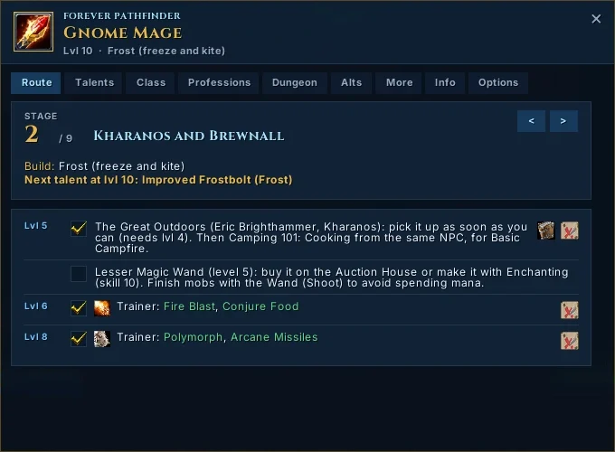
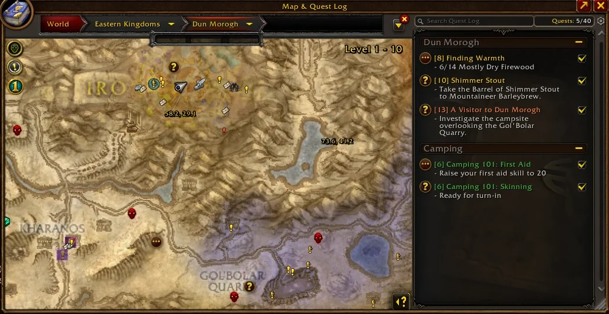
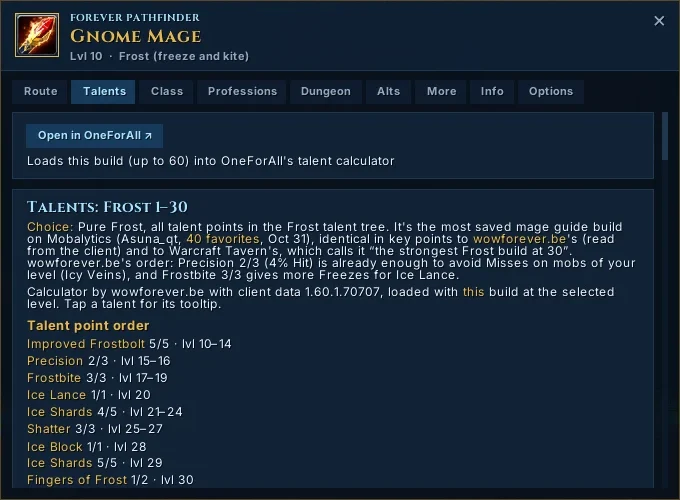
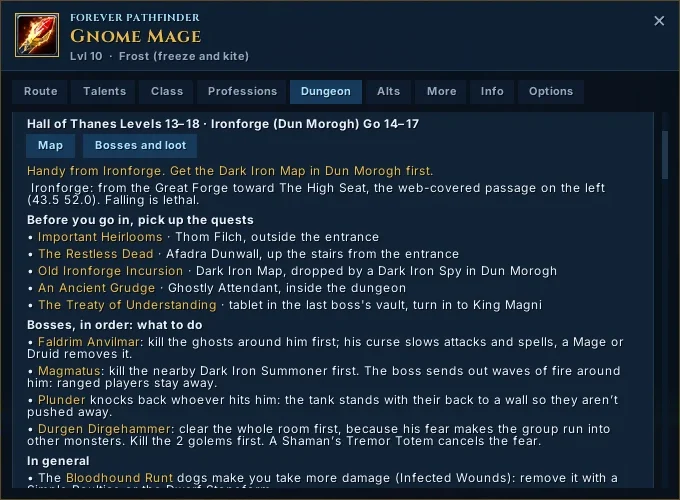
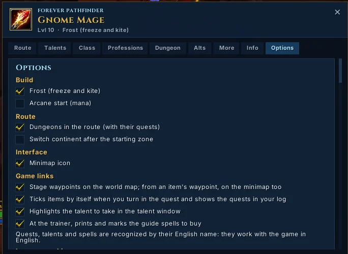
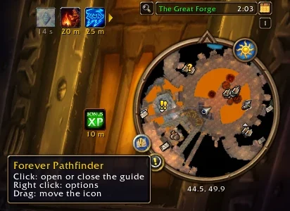

Cosa fa






Screenshot dal gioco vero, WoW: Forever (Gnome Mage al livello 10, addon in inglese).
- Icona sulla minimappa, come gli altri addon: clic apre la guida, clic destro le opzioni, si trascina lungo il bordo.
- Tutte le schede del sito nella stessa finestra e con lo stesso aspetto: Percorso, Talent, Classe, Profession, Dungeon, Alt, Altro, Info. Riconosce da solo razza, classe e livello.
- Percorso: una tappa alla volta, con le voci per livello da spuntare (restano salvate per ogni personaggio), il talento da prendere e i dungeon adatti al tuo livello.
- Mappa e minimappa: aprendo la mappa del mondo vedi i segnaposti della tappa, con un’icona per tipo e un bordo viola per distinguerli da Questie: classe per il trainer, grifone o viverna per il Flight Master, «!» o «?» per le quest, teschio per i dungeon. Il pulsante con la mappa accanto a una voce apre la mappa sulla zona giusta con il segnaposto scelto ben visibile (più grande, bordo dorato che pulsa, nome sotto), mette la freccia del gioco e scrive in chat zona e coordinate; all’arrivo si toglie da solo.
- Quest, con Questie: accanto alle voci vedi «nel registro» o «da consegnare»; la voce si spunta da sola quando consegni la quest, e anche per le quest fatte prima di installare l’addon. Il pulsante mappa di una voce con quest porta il segnaposto sul punto esatto, dal database di Questie: chi la dà o, se è nel registro, l’obiettivo o la consegna più vicina; il libro apre la sua scheda nel Journey di Questie.
- Talenti: nella finestra dei talenti del gioco (anche quella nuova di Forever) il talento da prendere ha un bordo luminoso; con OneForAll, nella scheda Talent «Apri in OneForAll» carica tutta la build nel suo calcolatore.
- Dungeon: il menu mette in cima i dungeon adatti al tuo livello, con le quest che hai già; la scheda di un dungeon ha le sezioni Quest, Boss e Come arrivarci, e ogni quest con una catena mostra tutti i passi numerati, con quello a cui sei e il pulsante mappa. «Mappa» apre la mappa del mondo sull’ingresso con il segnaposto (con MapUtils un clic sull’icona d’ingresso apre la mappa interna); con OneForAll «Boss e loot» apre il dungeon nella sua scheda.
- Profession: legge dal gioco le profession che hai e la tua skill e mostra il percorso fino a 300 con il passo in cui sei: cosa craftare o raccogliere, quante volte, i materiali con quanti ne hai nelle borse, il trainer più vicino per ogni grado; con OneForAll un clic apre la ricetta. Al massimo del grado una riga in chat ti ricorda di impararne uno nuovo. Facoltativo: tutti i trainer e i reagent vendor delle tue profession sulla mappa del mondo.
- Trainer: appena lo apri, scrive in chat gli spell della guida da comprare e li segna nell’elenco. Nella guida gli spell che conosci già sono in verde e la voce si spunta da sola quando li hai tutti.
- Opzioni nel gioco: build, dungeon sì o no, cambio di continente, icona e ogni collegamento col gioco da accendere o spegnere.
- Inglese o italiano, a scelta nelle Opzioni o con /fp lang (di base inglese). In italiano i nomi di quest, NPC, spell e oggetti restano in inglese, come sul sito e nel gioco.
Quest, talenti e spell si riconoscono dal nome inglese: questi collegamenti funzionano con il gioco in inglese. Per la mappa interattiva e i calcolatori tieni aperto il sito sul telefono.
Installazione
Con l’app CurseForge (il modo più semplice): scegli la versione WoW Forever, cerca Forever Pathfinder e installalo: Questie arriva insieme e gli aggiornamenti si scaricano da soli. Altrimenti, a mano:
- Serve Questie (versione per WoW: Forever, da CurseForge): senza Questie l’addon non si carica. OneForAll e MapUtils sono facoltativi: se ci sono, compaiono i loro pulsanti.
- Scarica ForeverPathfinder.zip ed estrailo (tasto destro → Estrai tutto). Ottieni la cartella
ForeverPathfindercon dentroForeverPathfinder.toc,Core.lua,Data.lua,icon.tgae la cartellaFonts. - Trova la cartella del gioco. Nell’app Battle.net seleziona WoW: Forever, tocca l’ingranaggio ⚙ accanto a «Gioca» → Mostra in Esplora risorse (su Mac: Mostra nel Finder). Di solito è
C:\Program Files (x86)\World of Warcraft\_forever_\. - Copia la cartella
ForeverPathfinderdentroInterface\AddOnsdi quella sottocartella. SeInterfaceoAddOnsnon esistono, creale tu. Alla fine deve esserci:…\World of Warcraft\_forever_\Interface\AddOns\ForeverPathfinder\ForeverPathfinder.toc
Attento a non avere una cartella dentro l’altra (ForeverPathfinder\ForeverPathfinder\…): succede spesso estraendo lo zip. - Avvia il gioco (se era aperto, chiudilo e riaprilo del tutto). Nella schermata dei personaggi tocca AddOns in basso a sinistra e controlla che Forever Pathfinder sia spuntato. Se risulta «non aggiornato», spunta Carica AddOn non aggiornati in alto.
Primo avvio e setup
- Entra con il personaggio: in chat compare «Forever Pathfinder caricato: clic sull’icona della minimappa o /fp per aprire la guida.»
- Clic sull’icona sul bordo della minimappa (o scrivi /fp): si apre la guida sul Percorso, alla tappa del tuo livello. Trascinala dove non ti dà fastidio.
- Controlla la testata: deve dire la tua razza, classe e livello. Se c’è scritto «Razza o classe non riconosciute», impostale a mano con /fp set razza-classe (vedi sotto).
- Apri Opzioni (o clic destro sull’icona) e scegli build, dungeon e cambio di continente come sul sito.
- Mentre giochi, spunta le voci fatte; le quest consegnate si spuntano da sole. Per chiudere: ×, Esc o di nuovo l’icona.
Comandi
| Comando | Cosa fa |
|---|---|
| /fp | Apre o chiude la guida, come il clic sull’icona della minimappa. Uguale: /pathfinder. |
| /fp opzioni | Apre le Opzioni. Uguale: /fp options. |
| /fp set razza-classe | Sceglie a mano il percorso, se il riconoscimento automatico sbaglia. Esempio: /fp set skyborne_h-druid. Vale solo per quel personaggio. |
| /fp auto | Torna al riconoscimento automatico di razza e classe. |
| /fp list | Scrive in chat tutte le combinazioni razza-classe disponibili. |
| /fp dungeon | Scrive in chat i dungeon consigliati al tuo livello: giudizio, ingresso e quest da prendere prima (anche di classe). |
| /fp cerca parola | Cerca in tutta la guida (es. /fp cerca sentinel hill): scrive le prime voci in chat e apre il Percorso sulla tappa della prima. Uguale: /fp find. |
| /fp debug | Scrive in chat versione, razza e classe come le vede il gioco, guida riconosciuta, talenti, salvataggi e collegamenti col gioco (continenti, segnaposto, finestra dei talenti, quest nel registro). Se qualcosa non va, mandaci uno screenshot di queste righe dal link in fondo alla pagina. |
| /fp lang | Passa dall’inglese all’italiano e viceversa (anche /fp lang it o /fp lang en). |
| /fp help | Riassunto dei comandi in chat. |
Nella finestra
| Schede | In alto, come sul sito: Percorso, Talent, Classe, Profession, Dungeon, Alt, Altro, Info, Opzioni. |
| < > | Nel Percorso: tappa precedente / successiva. |
| Casella | Spunta la voce come fatta; resta salvata per quel personaggio. |
| Mappa | Il pulsante a destra di una voce: segnaposto su mappa e minimappa, zona e coordinate in chat. |
| × o Esc | Chiude la finestra. |
| Rotella | Scorre la scheda. |
Combinazioni per /fp set
Scrivi la combinazione esattamente così (minuscolo, trattino in mezzo). Skyborne: skyborne_a per l’Alleanza, skyborne_h per l’Orda.
Problemi comuni
Non compare nella lista degli AddOns
La cartella è nel posto sbagliato o è doppia. Deve esserci il file Interface\AddOns\ForeverPathfinder\ForeverPathfinder.toc dentro la cartella di Forever (non di Retail o Classic Era). Poi chiudi e riapri il gioco del tutto.
È nella lista ma in rosso, «dipendenza mancante»
Manca Questie (o è spento): installalo dalla sua pagina di CurseForge, versione per WoW: Forever, e spuntalo nella lista degli AddOns.
Risulta «non aggiornato» (out of date)
Nella schermata AddOns spunta Carica AddOn non aggiornati. Succede quando Blizzard aggiorna il gioco prima di noi; pubblicheremo una versione aggiornata.
«Razza o classe non riconosciute»
Capita soprattutto con gli Skyborne, il cui nome interno lo vedremo solo al lancio. Usa /fp set con la tua combinazione (es. /fp set skyborne_a-mage) e segnalacelo con uno screenshot di /fp debug.
Il talento indicato non è quello che ho preso
L’addon segue l’ordine della build scelta nelle Opzioni e conta i punti già spesi. Se hai messo punti altrove, da lì in poi i consigli scorrono di conseguenza: conta il numero di punti, non quali hai preso. Per un’altra build cambiala nelle Opzioni.
Segnaposti, quest, talenti o trainer non funzionano
Si riconoscono dal nome inglese di quest, talenti e spell: servono il gioco in inglese e il collegamento acceso nelle Opzioni. Se ancora non va, mandaci uno screenshot di /fp debug: l’ultima riga dice cosa vede l’addon.
Le spunte spariscono dopo il riavvio
Nella beta di Forever c’era un bug: il gioco non rileggeva i dati salvati degli addon. Dovrebbe essere risolto al lancio; se succede ancora, segnalacelo: in /fp debug «caricamenti 1» anche dopo un /reload lo conferma.
Aggiornare e disinstallare
Aggiornare: scarica di nuovo lo zip da questa pagina e sostituisci la cartella ForeverPathfinder con quella nuova, a gioco chiuso. Le spunte restano: il gioco le salva a parte, nella cartella WTF.
Disinstallare: elimina la cartella Interface\AddOns\ForeverPathfinder.
Hai trovato un errore o hai un’idea? Segnalalo qui. Progetto personale gratuito, non affiliato a Blizzard Entertainment. World of Warcraft © Blizzard Entertainment.
What it does
Screenshots from the real game, WoW: Forever (Gnome Mage at level 10, addon in English).
- Minimap icon, like other addons: click opens the guide, right click the options, drag it along the edge.
- Every tab of the website in the same window and with the same look: Route, Talents, Class, Professions, Dungeon, Alts, More, Info. It detects race, class and level by itself.
- Route: one stage at a time, with the items per level to tick (saved per character), the talent to take and the dungeons for your level.
- Map and minimap: open the world map to see the stage waypoints, with one icon per kind and a purple border to tell them from Questie’s: class icon for trainers, gryphon or wyvern for Flight Masters, “!” or “?” for quests, a skull for dungeons. The map button next to an item opens the map on the right zone with the chosen waypoint easy to spot (bigger, pulsing golden border, name below), sets the game’s arrow and prints zone and coordinates in chat; it clears itself when you arrive.
- Quests, with Questie: next to the items you see “in your log” or “ready to turn in”; the item ticks itself when you turn in the quest, and also for quests done before you installed the addon. The map button of an item with a quest takes the waypoint to the exact spot, from Questie’s database: who gives it or, if it is in your log, the nearest objective or turn-in; the book opens its details in Questie’s Journey.
- Talents: in the game’s talent window (Forever’s new one too) the talent to take has a glowing border; with OneForAll, “Open in OneForAll” in the Talents tab loads the whole build into its calculator.
- Dungeons: the menu puts the dungeons right for your level on top, with the quests you already have; a dungeon’s page has the sections Quests, Bosses and How to get there, and every quest with a chain shows all its steps numbered, with the one you are on and its map button. “Map” opens the world map on the entrance with the waypoint (with MapUtils a click on its entrance icon opens the dungeon’s own map); with OneForAll “Bosses and loot” opens the dungeon in its tab.
- Professions: reads your professions and skill from the game and shows the route up to 300 with the step you are on: what to craft or gather, how many times, the materials with how many you have in your bags, the nearest trainer for each rank; with OneForAll one click opens the recipe. At the rank cap a chat line reminds you to learn the next one. Optional: all trainers and reagent vendors for your professions on the world map.
- Trainer: as soon as you open it, it prints in chat the guide spells to buy and marks them in the list. In the guide the spells you already know are green, and the item ticks itself once you have them all.
- Options in game: build, dungeons on or off, continent switch, icon and every game link to turn on or off.
- English or Italian, your choice in the Options or with /fp lang (English by default). In Italian the names of quests, NPCs, spells and items stay in English, as on the website and in the game.
Quests, talents and spells are recognized by their English name: these links work with the game in English. For the interactive map and the calculators keep the website open on your phone.
Installation
With the CurseForge app (the easiest way): pick the WoW Forever version, search for Forever Pathfinder and install it: Questie comes with it and updates download by themselves. Otherwise, by hand:
- You need Questie (the WoW: Forever version, from CurseForge): without Questie the addon does not load. OneForAll and MapUtils are optional: if they are there, their buttons appear.
- Download ForeverPathfinder.zip and extract it (right click → Extract All). You get the
ForeverPathfinderfolder withForeverPathfinder.toc,Core.lua,Data.lua,icon.tgaand theFontsfolder inside. - Find the game folder. In the Battle.net app select WoW: Forever, click the ⚙ gear next to “Play” → Show in Explorer (on Mac: Show in Finder). It is usually
C:\Program Files (x86)\World of Warcraft\_forever_\. - Copy the
ForeverPathfinderfolder intoInterface\AddOnsof that subfolder. IfInterfaceorAddOnsdo not exist, create them. In the end you must have:…\World of Warcraft\_forever_\Interface\AddOns\ForeverPathfinder\ForeverPathfinder.toc
Make sure you do not end up with a folder inside another (ForeverPathfinder\ForeverPathfinder\…): it often happens when extracting the zip. - Start the game (if it was open, close it completely and reopen it). On the character screen click AddOns at the bottom left and check that Forever Pathfinder is ticked. If it shows as “out of date”, tick Load out of date AddOns at the top.
First start and setup
- Log in with your character: the chat shows “Forever Pathfinder loaded: click the minimap icon or type /fp to open the guide.”
- Click the icon on the edge of the minimap (or type /fp): the guide opens on the Route, at the stage of your level. Drag it where it does not get in the way.
- Check the header: it must show your race, class and level. If it says “Race or class not recognized”, set them by hand with /fp set race-class (see below).
- Open Options (or right click the icon) and pick build, dungeons and continent switch as on the website.
- While you play, tick the items you have done; turned-in quests tick themselves. To close: ×, Esc or the icon again.
Commands
| Command | What it does |
|---|---|
| /fp | Opens or closes the guide, like clicking the minimap icon. Same: /pathfinder. |
| /fp options | Opens the Options. Same: /fp opzioni. |
| /fp set race-class | Picks the route by hand, if the automatic detection is wrong. Example: /fp set skyborne_h-druid. Only for that character. |
| /fp auto | Goes back to automatic race and class detection. |
| /fp list | Prints every available race-class combination in chat. |
| /fp dungeon | Prints the recommended dungeons for your level: verdict, entrance and quests to pick up first (class ones too). |
| /fp find word | Searches the whole guide (e.g. /fp find sentinel hill): prints the first items in chat and opens the Route at the stage of the first one. Same: /fp cerca. |
| /fp debug | Prints version, race and class as the game sees them, detected guide, talents, saved data and game links (continents, waypoint, talent window, quests in the log). If something is wrong, send us a screenshot of these lines from the link at the bottom of the page. |
| /fp lang | Switches between English and Italian (also /fp lang en or /fp lang it). |
| /fp help | Command summary in chat. |
In the window
| Tabs | At the top, as on the website: Route, Talents, Class, Professions, Dungeon, Alts, More, Info, Options. |
| < > | In the Route: previous / next stage. |
| Checkbox | Marks the item as done; saved for that character. |
| Map | The button on the right of an item: waypoint on map and minimap, zone and coordinates in chat. |
| × or Esc | Closes the window. |
| Mouse wheel | Scrolls the tab. |
Combinations for /fp set
Type the combination exactly like this (lowercase, hyphen in the middle). Skyborne: skyborne_a for the Alliance, skyborne_h for the Horde.
Common problems
It does not appear in the AddOns list
The folder is in the wrong place or doubled. You must have the file Interface\AddOns\ForeverPathfinder\ForeverPathfinder.toc inside the Forever folder (not Retail or Classic Era). Then close and reopen the game completely.
It is in the list but red, “missing dependency”
Questie is missing (or turned off): install it from its CurseForge page, the WoW: Forever version, and tick it in the AddOns list.
It shows as “out of date”
On the AddOns screen tick Load out of date AddOns. It happens when Blizzard updates the game before we do; we will publish an updated version.
“Race or class not recognized”
It happens mostly with Skyborne, whose internal name we will only see at launch. Use /fp set with your combination (e.g. /fp set skyborne_a-mage) and let us know with a screenshot of /fp debug.
The suggested talent is not the one I took
The addon follows the order of the build picked in the Options and counts the points you have spent. If you put points elsewhere, the suggestions move on accordingly: it counts how many points, not which ones. For another build change it in the Options.
Waypoints, quests, talents or trainer do not work
They are recognized by the English name of quests, talents and spells: you need the game in English and the link turned on in the Options. If it still does not work, send us a screenshot of /fp debug: the last line says what the addon sees.
Ticks disappear after a restart
The Forever beta had a bug: the game did not read addons’ saved data back. It should be fixed at launch; if it still happens, let us know: in /fp debug, “loads 1” even after a /reload confirms it.
Updating and uninstalling
Updating: download the zip again from this page and replace the ForeverPathfinder folder with the new one, with the game closed. Your ticks stay: the game saves them separately, in the WTF folder.
Uninstalling: delete the Interface\AddOns\ForeverPathfinder folder.
Found a mistake or have an idea? Report it here. Free personal project, not affiliated with Blizzard Entertainment. World of Warcraft © Blizzard Entertainment.